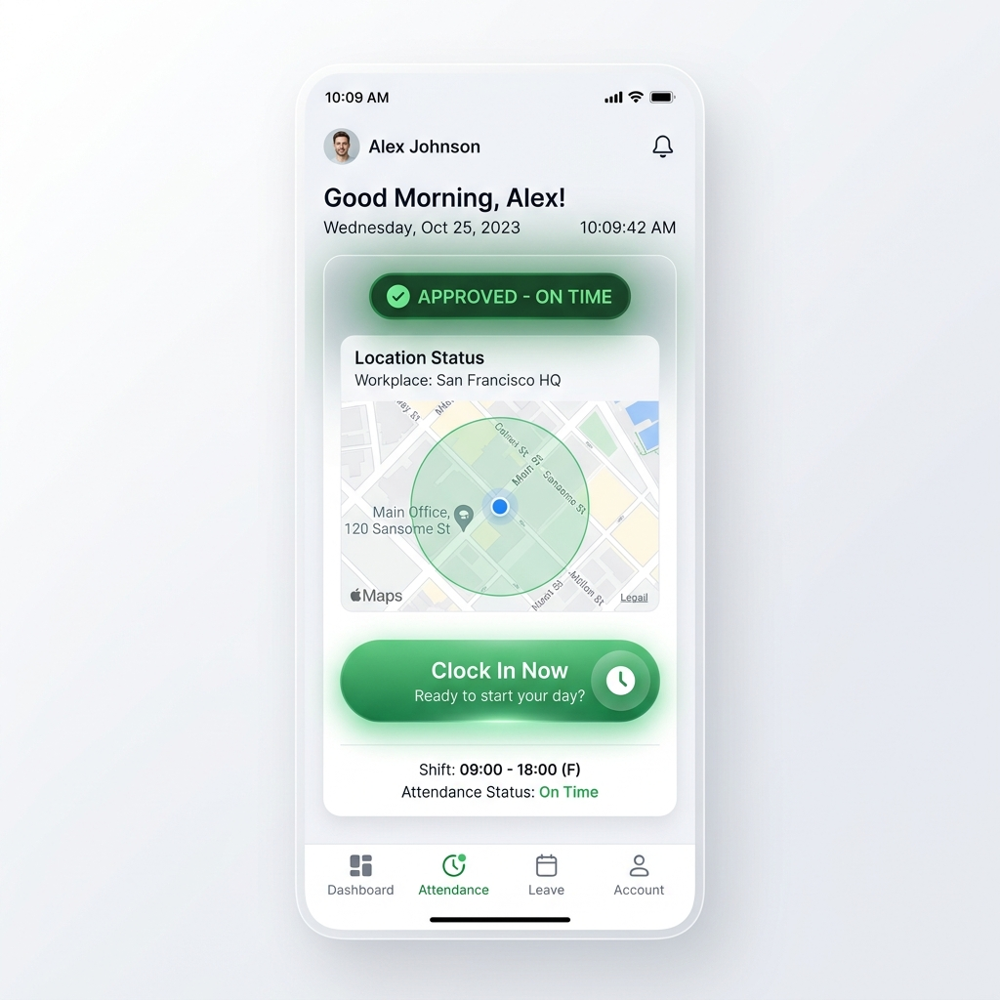
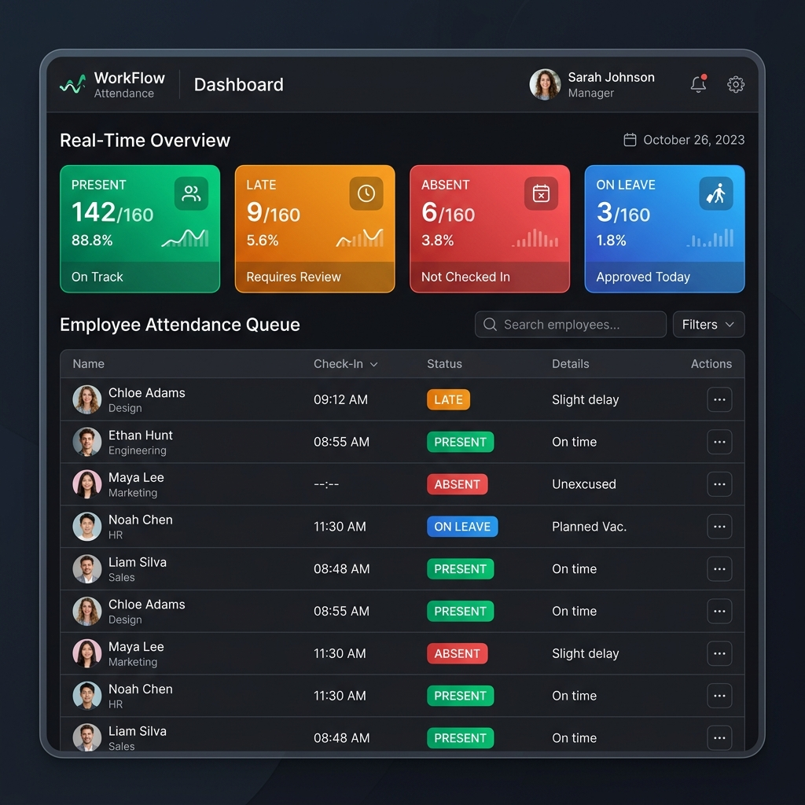
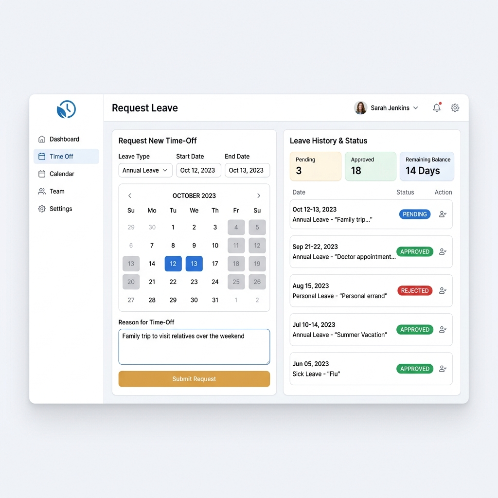

The Challenge
Traditional attendance systems are vulnerable to fraud, such as buddy punching or spoofed locations, and create heavy administrative overhead for managers. Validating who was actually on-site required manual checking of paper cards or trusting easily forgeable apps. The client needed a bullet-proof system to automatically verify employee locations using exact coordinates without requiring expensive physical biometric devices.
Architectural Overhaul
I architected and developed NYAMPE from the ground up using a high-performance Go (Golang) backend, powered by the Gin framework and GORM, and a responsive Angular 16 frontend. The system relies on precise mathematical computations for location validation.
Go Micro-Backend
Utilizes Gin Web Framework and GORM for lightning-fast API responses and database migrations.
Angular 16 Frontend
Reactive forms and TailwindCSS deliver a seamless, native-feeling mobile and desktop experience.
Stateless RBAC
Role-Based Access Control via stateless JWTs separating Employees, Managers, and Super Admins.
Multi-Office Support
Dynamic configuration allowing managers to oversee 1-4 offices, each with custom coordinates and radiuses.
Deep Dive: Core Implementations
Server-Side Haversine Formula
To prevent location spoofing, the browser captures the HTML5 Geolocation, but the validation logic is strictly server-side. The Go backend computes the great-circle distance between the employee's coordinates and their assigned office profile, accurate to approximately 1 meter.
One-Click Auto-Approval Workflow
If the calculated distance is less than or equal to the configured allowed radius, the system instantly marks the attendance as Approved. If not, it falls into a Pending state, securely queuing it for manual review by a Manager in the dashboard.
Real-Time Manager Dashboard
A reactive queue provides managers with a real-time overview of Present, Absent, Late, or On Leave personnel across multiple branches, enabling immediate oversight and rapid exception handling.
Application Interface
A look at the modern, responsive UI designed for both employees in the field and managers in the office.

Employee Clock-In
GPS-verified attendance with 1-click auto-approval.

Manager Dashboard
Real-time queue of personnel status and exceptions.

Leave Management
Streamlined workflow for requesting and approving time off.
Results & Impact
The NYAMPE platform revolutionized attendance tracking for our clients, creating a frictionless experience for employees and unparalleled visibility for management.
- Reduced daily manager administrative overhead from ~30 minutes to just ~5 minutes (an 83% reduction).
- Completely eliminated "buddy punching" and effectively mitigated location fraud.
- Currently utilized by 5+ organizations, scaling gracefully with Go's efficient concurrency model.